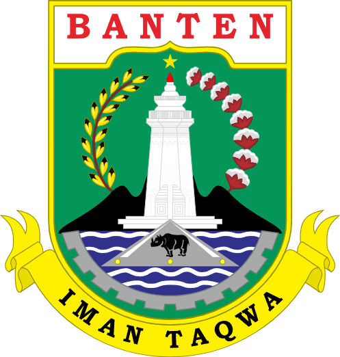
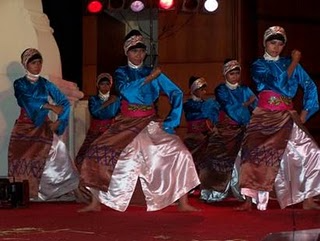

Sumatra
Nusa Tenggara
Maluku
Papua
Banten
Banten adalah sebuah provinsi di Pulau Jawa, Indonesia. Ibu kota dan pusat pemerintahannya berada di Kota Serang. Provinsi ini merupakan provinsi yang paling barat di Pulau Jawa. Provinsi ini pernah menjadi bagian dari provinsi Jawa Barat, tetapi provinsi ini menjadi wilayah pemekaran sejak tahun 2000, dengan keputusan Undang-Undang Nomor 23 Tahun 2000. Suku aslinya adalah suku Sunda Banten yang berada di wilayah Kabupaten Serang bagian selatan, Kabupaten Pandeglang, Kabupaten Lebak, serta sebagian besar Kabupaten Tangerang, dan komunitas masyarakat adat yakni suku Badui yang mendiami wilayah Gunung Kendeng dan Leuwidamar di Kabupaten Lebak.
Informasi Umum
| Nama Provinsi | Kode Wilayah | Kode Internasional | Singkatan Umum | Ibu Kota | Hari Libur | Lambang |
|---|---|---|---|---|---|---|
| Banten | 36 | ID-BT | - | Serang | 4 Oktober 2000 |  |
Budaya

Sulah nyanda adalah rumah adat orang Badui yang berada di Provinsi Banten. Disebut sulah nyanda, karena atapnya terbuat dari daun nipah yang dikeringkan. Nyanda dalam bahasa Sunda memiliki arti sikap bersandar, sandarannya tidak lurus melainkan agak merebah ke belakang. Salah satu sulah nyanda ini dibuat lebih panjang dan memiliki kemiringan yang lebih rendah pada bagian bawah rangka atap. Rumah tradisional Badui ini disebut juga Imah dan harus menghadap ke selatan. Bentuknya empat persegi panjang dengan atap kampung dan sosoran dipasang di salah satu sisinya. Selain itu, rumah adat ini memiliki hiasan di atas atap rumah yang menyerupai bentuk tanduk.
Pakaian adat Pangsi adalah pakaian yang digunakan dalam keseharian masyarakat banten khususnya mereka yang tinggal di pedesaan yang masih memegang teguh adat istiadat. Jika dilihat dari bentuknya, pakaian adat Pangsi hampir mirip dengan pakaian adat suku Sunda. Adat istiadat Banten besar dipengaruhi oleh adat Sunda, jadi tidak heran jika pakaian adatnya pun hampir mirip. Pakaian adat Pangsi juga digunakan untuk latihan silat tradisional khas Banten. Masyarakat Banten masih sering mengadakan latihan silat dan pakaian yang digunakan adalah pakaian adat Pangsi. Pakaian adat Pangsi digunakan dengan cara dililitkan secara menumpang mirip dengan memakai sarung.
Tarian Ngebaksakeun. Gerak tari ini mengadaptasi pijakan silat terumbu yang merupakan salah satu gaya bela diri dari Kabupaten Pandeglang. Biasanya, masyarakat Banten menyuguhkan tari ngebaksakeun untuk membuka suatu acara atau menyambut tamu penting. Durasi tariannya pun terbilang singkat, yakni sekitar 5 menit saja. Saat menampilkan tarian mereka, para penari ngebaksakeun akan menggunakan kostum atasan berwarna biru. Untuk bawahannya, ada kombinasi kain samping cokelat bercorak dan celana putih. Keunikan lain dari ngebaksakeun adalah tarian ini juga identik dengan pertunjukan debus, yang juga menjadi ciri khas Banten.

Tari Saman merupakan salah satu media untuk menyampaikan pesan atau dakwah. Tarian ini mencerminkan pendidikan, keagamaan, sopan santun, kepahlawanan, kekompakan dan kebersamaan.

Tari Seudati adalah salah satu tarian tradisional yang berasal dari daerah Aceh. Tarian ini biasanya ditarikan oleh sekelompok penari pria dengan gerakannya yang khas dan enerjik serta diiringi oleh lantunan syair dan suara hentakan para penari.
Bahasa daerah yang paling banyak penuturnya adalah bahasa Aceh yang dipakai oleh suku Aceh. Selain itu juga terdapat bahasa Gayo, Alas, Kluet, Singkil, Jamee dan Melayu Tamiang. Di Simeulue terdapat 3 bahasa yaitu bahasa Devayan, Sigulai, dan Leukon. Selain itu juga terdapat bahasa Haloban di Pulau Banyak. Beberapa bahasa daerah dari bagian Indonesia lainnya juga dipertuturkan oleh sebagian penduduk di Provinsi Aceh. Di antaranya, yaitu bahasa Jawa yang tersebar di berbagai wilayah transmigrasi di seluruh Aceh.

Aceh merupakan kawasan yang sangat kaya dengan seni budaya. Aceh mempunyai aneka tradisi salah satunya seperti Tradisi Peusijuek. Peusijuek adalah sebuah prosesi adat dalam budaya masyarakat Aceh yang masih dipraktikan hingga saat ini. Tradisi peusijuek ini dilakukan pada hampir semua kegiatan adat dalam kehidupan masyarakat di Aceh. Misalnya ketika memulai sebuah usaha, menyelesaikan persengketaan, terlepas atau selesai dari musibah, menempati rumah baru, merayakan kelulusan, memberangkatkan dan menyambut kedatangan haji, kembalinya keluarga dari perantauan dan masih banyak lagi.

Rencong adalah senjata tradisional bangsa Aceh, bentuknya menyerupai huruf L, dan bila dilihat lebih dekat bentuknya merupakan kaligrafi tulisan bismillah. Rencong termasuk dalam kategori belati. Selain rencong, bangsa Aceh juga memiliki beberapa senjata khas lainnya, seperti sikin panyang, peurise awe, peurise teumaga, siwah, geuliwang dan peudeueng.
Bungong Jeumpa adalah lagu daerah yang berasal dari Aceh. Bungong Jeumpa dalam bahasa Aceh berarti bunga cempaka. Lagu ini memiliki arti penting dalam budaya suku Aceh yang menggambarkan semangat dan keindahan Tanah Aceh dan menjadi simbol bunga khas di Kesultanan Aceh.
Kuliner
Aceh mempunyai aneka jenis makanan yang khas. salah satu kuliner khas Aceh yang juga sangat terkenal bahkan hingga ke mancanegara adalah Mi Aceh, sejenis mi kuning basah yang diracik dengan bumbu khas nan pedas.

Selain itu makanan yang khas Aceh lain yakni, Timphan. Timphan adalah penganan kecil sejenis lepat. Bahan untuk membuat timphan terdiri dari tepung, pisang, dan santan. Semua bahan ini kemudian diaduk-aduk sampai kenyal. Lalu dibuat memanjang dan di dalamnya diisi dengan serikaya atau kelapa parut yang dicampur dengan gula. Kemudian adonan ini dibungkus dengan daun pisang dan dikukus (rebus tanpa direndam air) selama satu jam.

Destinasi Wisata
Salah satu wisata alam yang terkenal di Aceh adalah wisata pantai, pantai pasir putih yang terkenal diantaranya Pantai Lampuuk di Aceh Besar dan Pantai Pasi Saka di Aceh Jaya.

Selain itu Aceh juga dikenal dengan cakupan hutan yang masih cukup lestari seperti Taman Nasional Gunung Leuser. Beberapa satwa endemis Sumatra masih lazim ditemukan di Aceh seperti orangutan, gajah, harimau dan badak.